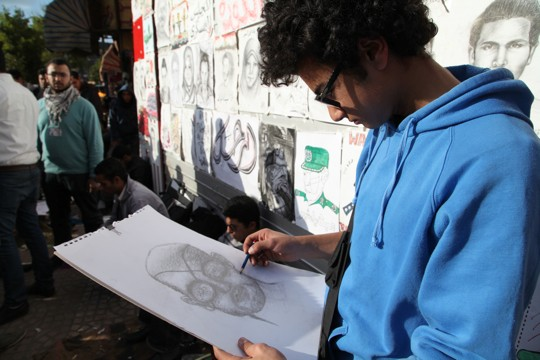

↩ VOLVER :) ↩
‚≠êüéá GRADO DECIMO üéá‚≠ê

Albeiro José Sanchez Diaz,grado 10-01 , toca la guitarra acustica y electrica, le gusta aprender canciones de diferentes bandas de rock como su favorita Guns N' Roses, sueña convertirse en un gran guitarrista como slash. Lo puedes encontrar en ig como @Sanchez Guitar
Daniel Felipe Cortéz,grado 10-02, empezó a sus 6 años dibujando en el colegio, actlmente le gusta hacer dibujos de personajes de videojuegos, caricaturas y parodias animadas. Lo puedes encontrar en X (twitter) como @Danidraws16

Alejandra Gomez Parra, grado 10-03, interpreta el violin desde los 10 años gracias a su papá, quien le heredó su amor y talento por este instrumento, desde hace 2 años pertenece a la filarmonica de su localidad. La puedes encontrar en Facebook como "Aleja Parra"